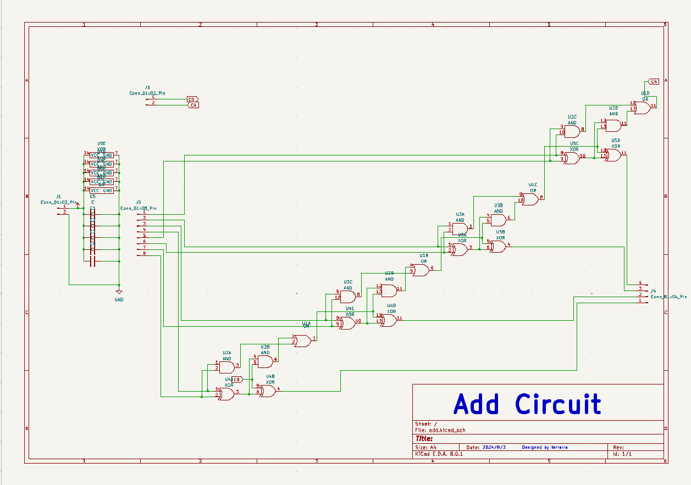
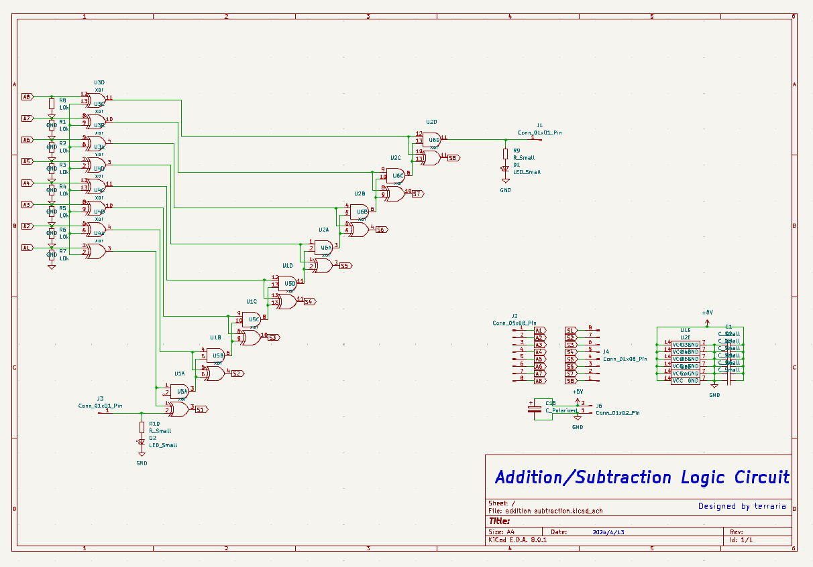
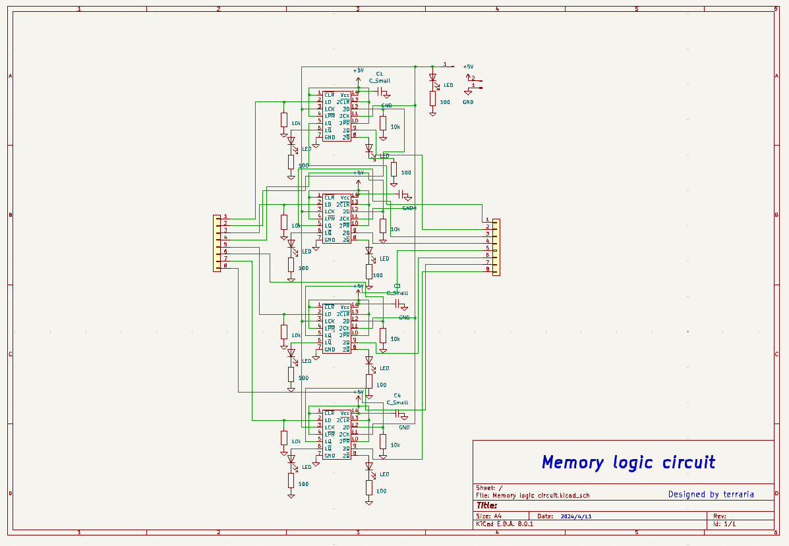
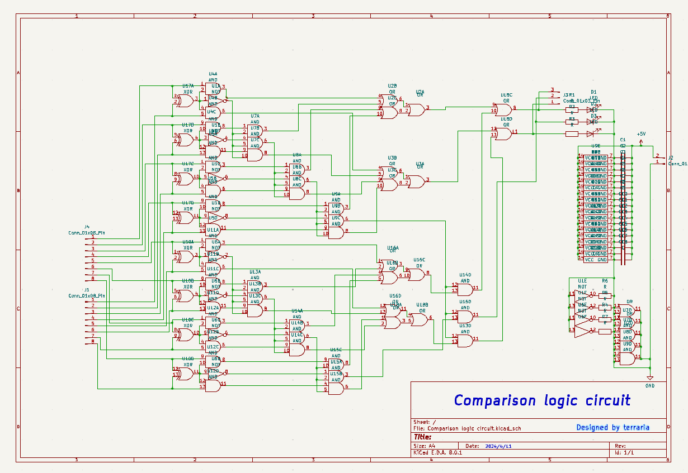
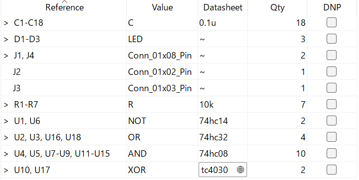
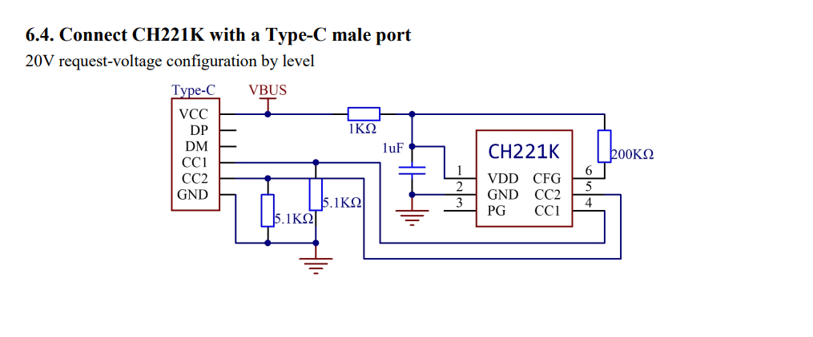
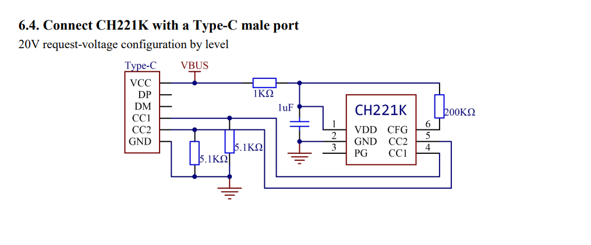

皆さん初めまして電気通信大学1年のterrariaです。
展示を見ていただきありがとうございます。
このサイトでは、展示物に関する簡単な解説を行います。
計算機
今回展示する計算機は加算および比較が行える回路となっています。
加算器は4bitの全加算器(ICが5個ついている黒い回路基板)で下位bit加算基板の繰り上げを
上位bit加算基板につなげることで任意のbit数の加算を実現しています。
さらに2の補数をとる回路を実装し、負の数も表現できるようにする予定です。
(今回は、2の補数をとる回路を制作したものの配線不足及び、配線長の増加に伴う信号の不安定化により断念)
比較器では同じ桁の数値を比較し、その結果を最高位bitから最下位bitにかけて、
値が同じならば出力を0にして、値が異なるならば大きい値をとる方の出力を1、
小さい方を0にして、下位bitの比較結果の全てを無効にするようにして比較を行っています。
またデータを一時的に保存するためのレジスタ(緑色の基板)も作成したものの
データの入出力を制御する回路が未完成のため計算機にはまだ実装していません。

全加算器

2の補数をとる回路

レジスタ

比較器
販売物
-
はんだ付け練習基板
これまでに作ってきたミス基板です。
はんだ付けの練習に使ってください。
-
比較回路基板
必要以上に届いた基板です。
前述の計算機に使う比較回路と全く同じです。
必要な部品リスト

-
tinyAVR X04用基板
詳しくはこちら
-
PD_fix
抵抗値と出力電圧
 
回路図
詳しくはこちら

回路図
詳しくはこちら